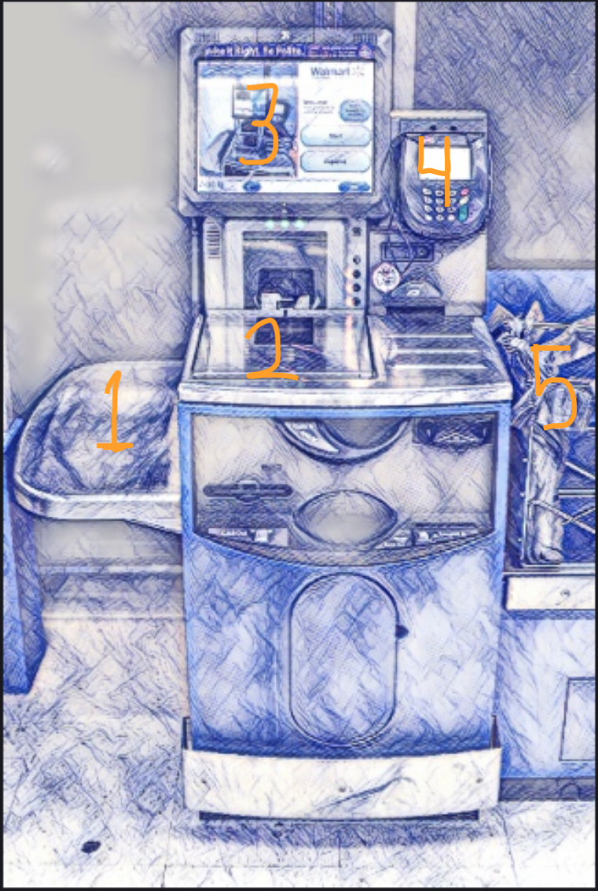
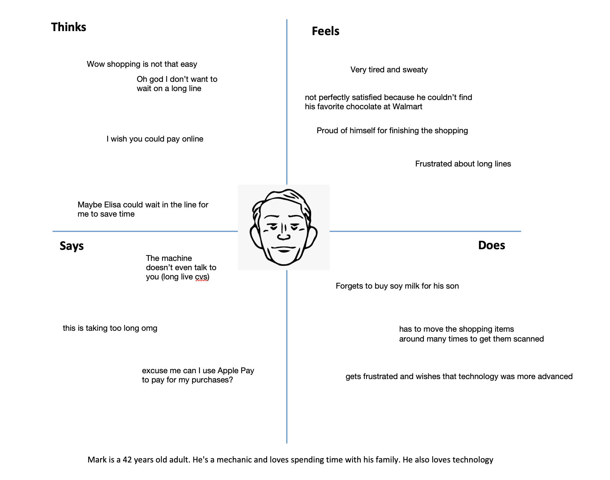
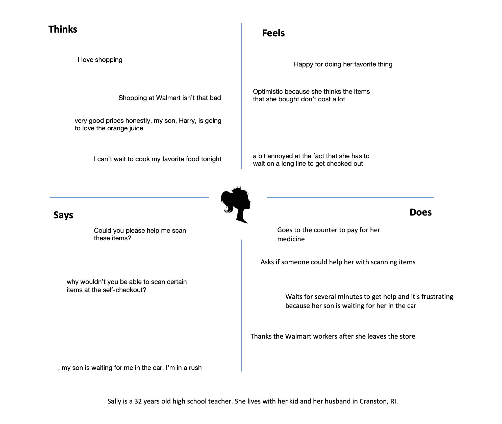
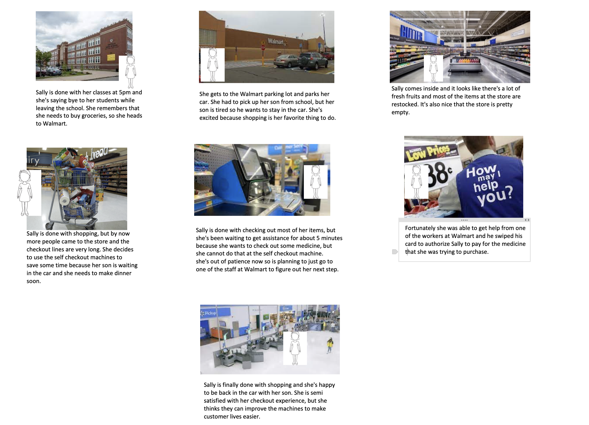

Personas & Storyboarding
Part 1: Preparation
1) Interface:
I chose to research on Walmart self-checkout machine and make it into a personas and storyboarding project.
A big number of people across the USA use Walmart and the self-checkout machines are often used by Walmart
customers. There are always long lines in Walmart so self-checkout machines help reduce crowd and shorten
long lines. Figure 1 is a sketch of Walmart self-checkout machine.
2) Questions for users regarding their experiences with the interface:
• Why did you decide to use the self-checkout machines?
• Did you have any trouble scanning any items at self-checkout counters?
• How was your experience with the self-checkout machine that you used?
• Is there any feature that could be added to these machines to ease your experience?
• Did it take you to scan your items longer than expected?
• What was good about using the self-checkout machines?
• Will you use the self-checkout machines next time you come to Walmart?
3) Sketch and a brief description of the interface
The sketch below is what a Walmart self-checkout machine looks like. It consists of the following components:

1. Items desk on the left where the customer places their items on it before scanning
2. A scanner on the machine itself that scans items using their barcodes
3. A screen that lets the customer see the price of each item and takes them to the next steps after they scanned all their items
4. A card reader on the right side of the screen that lets the customer pay for the items that they purchased
5. A bagging area for the scanned items and bagging after checkout
Part 2: Recording Observations
1) Key Observations
1) It seems like the self-checkout machines at Walmart are doing a good job. However, there are things
about the machines that can be improved. Sometimes certain items cannot be scanned by the self-checkout
machines and getting assistance while a customer is using one of these machines is time consuming. Also,
it would be great if the customers can use tap to pay feature to pay for their purchased items. Some
customers also thought that it would be easier to use self-checkout machines if they talk to you like the ones in CVS.
2) User Responses
I talked to 13 people at a Walmart exit and 9 of them used Walmart self-checkout machines for payment.
The customers had diverse amounts of items bought (from a few items to a full shopping cart). Here is what I found out after interviewing the customers:
• 9 / 9 customers used the self-checkout machines because they thought it is faster that staying in a line
• 2 / 9 customers had trouble scanning certain items (ex. Pharmacy items)
• 2 / 9 customers complained about how tap to pay feature does not work at self-checkout machines
• 3 / 9 customers had to wait for several minutes to get help from an assistant after the machine stopped scanning items
• 5 / 9 customers thought that it would be more helpful if the self-checkout machines had self-speaking features and would talk to you
• 1 / 9 customers left the self-checkout machine in the middle of checkout and joined a line for cashier checkout
• 4 / 9 customers thought it took them longer than expected to finish checkout.
• 1 / 13 customers wanted to use a self-checkout machine, but she did not have her credit card with her, so she had to wait on the line and pay with cash
Part 3: Personas

"Technical" Mark is a 42 years old mechanic. He loves technology and spending time
with his family. At times he can be an impatient man, but he's always a happy and wise lad. He is in his
impatience mood now because he is having a little bit of trouble with a Walmart self-checkout machine.

"Kind and happy" Sally is a 32 years old high school teacher. She lives with her little boy
and husband in Cranston, RI. She loves shopping and cooking and she is excited to be at Walmart. Today she is here
to shop grocerries and medicine, but she is in a little bit of a rush.
Part 4: Storyboards
Sally and Mark almost cover all the problems that our interviewees faced. Here I am going to go with Sally for the storyboard.
